12-docker-internals-hands-on-screenshots.pdf in this folder.docker: command not found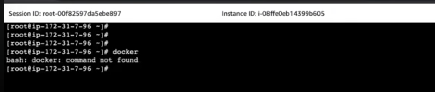
yum install docker — 10 packages: docker + containerd + runc + iptables / libcgroup / pigz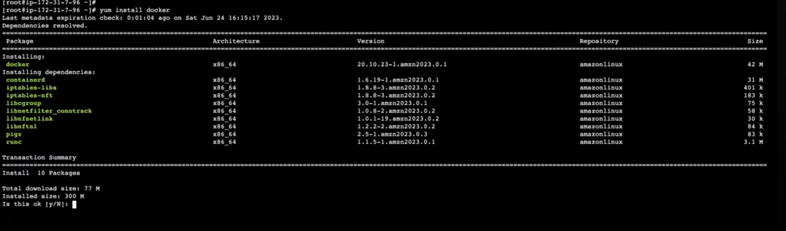
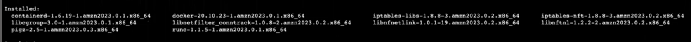
docker ps → Cannot connect to the Docker daemon at unix:///var/run/docker.sock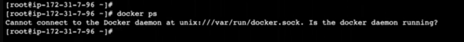
ss -tnlp — only sshd listening, no docker / containerd yet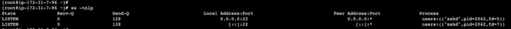
systemctl start docker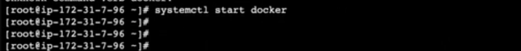
docker ps — empty table, CLI now reaches the daemon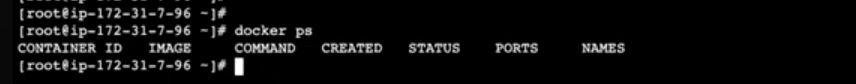
ps aux — /usr/bin/containerd (26298) and /usr/bin/dockerd -H fd:// --containerd=...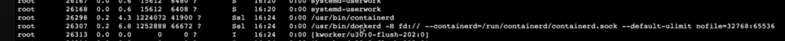
systemctl status docker — TriggeredBy docker.socket, Main PID 26307, overlay2, API listen on /run/docker.sock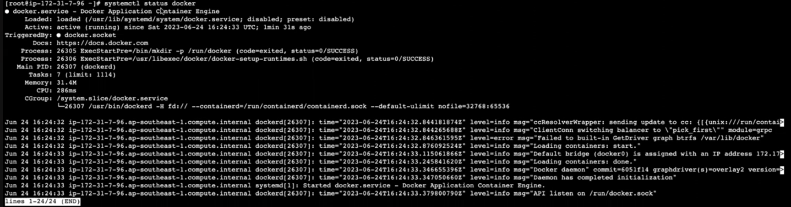
/usr/bin/dockerd -H fd:// --containerd=/run/containerd/containerd.socksystemctl status containerd — modprobe overlay, serving containerd.sock + containerd.sock.ttrpc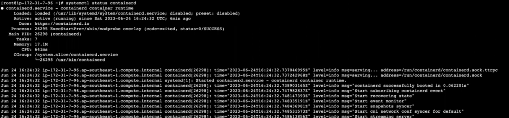
ps aux — containerd and dockerd both running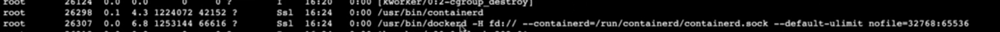
ss -tnlp — containerd listening on 127.0.0.1:41841 (CRI streaming server)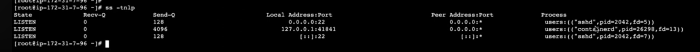
docker ps — still no containers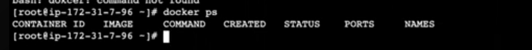
docker run -itd nginx — 7 layers pulled, container ID printed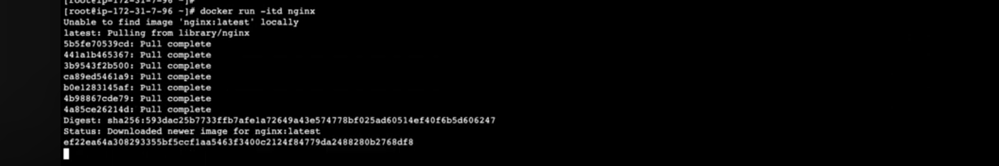
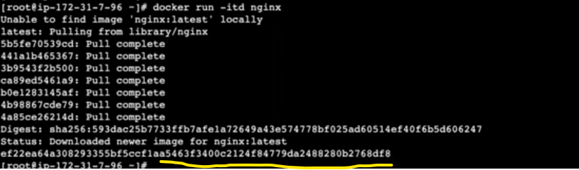
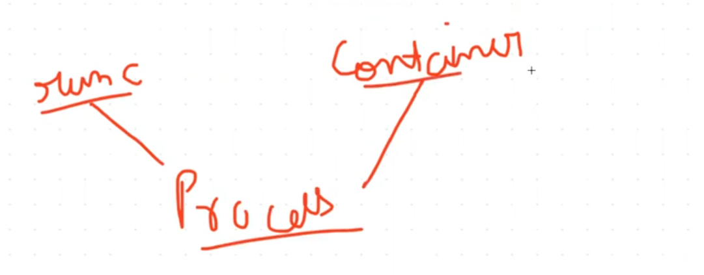
ps aux — containerd-shim-runc-v2 -namespace moby -id ef22ea64a308… (PID 27017)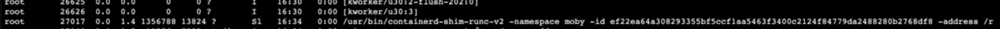
-namespace moby, -id = container ID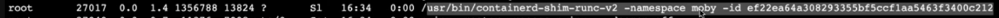
-address /run/containerd/containerd.sock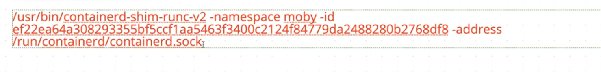
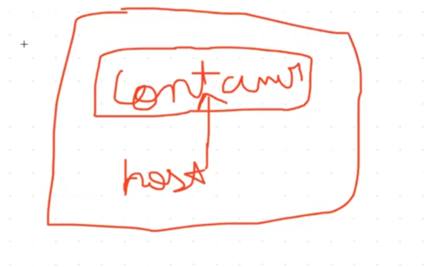
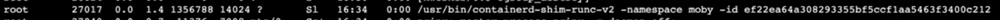
docker ps — ef22ea64a308 nginx, Up 11 minutes, adoring_ishizaka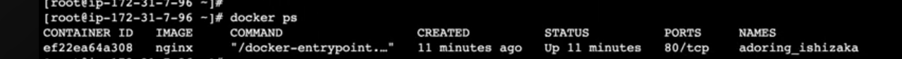
docker kill ef22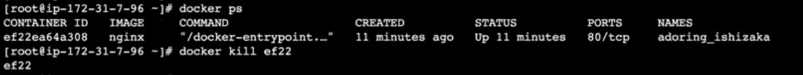
ps aux after kill — shim gone; then docker run -itd nginx again → 80cf84c4…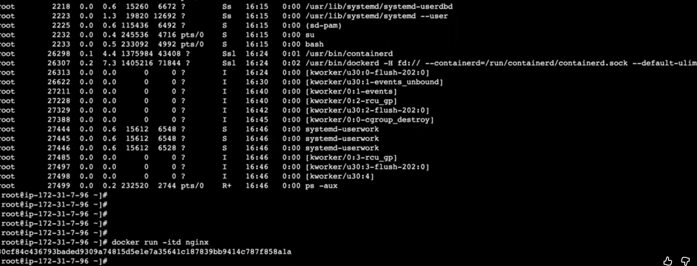
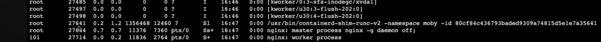
/proc — one directory per PID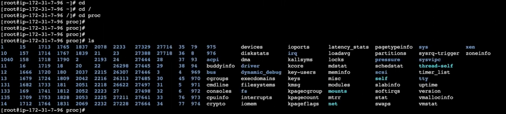
/proc/27641 — cmdline, exe, ns, cgroup, root, fd …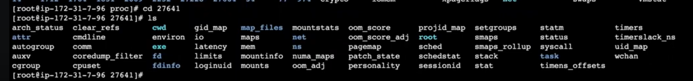
cd /proc/27641/root — a full / (the shim is a host process, so this is the host root)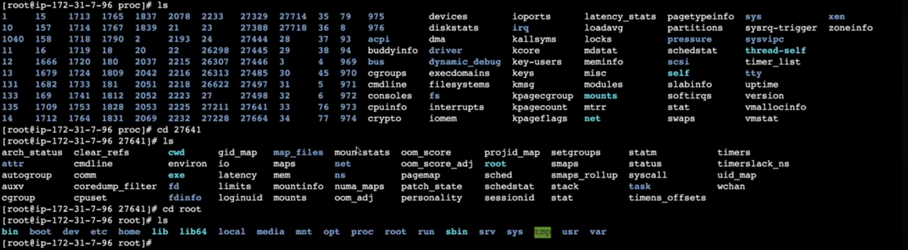
touch technohulk in /proc/27641/root/tmp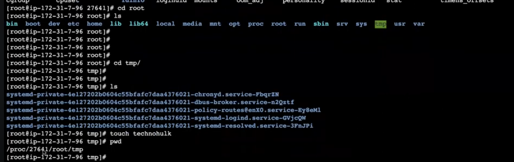
technohulk created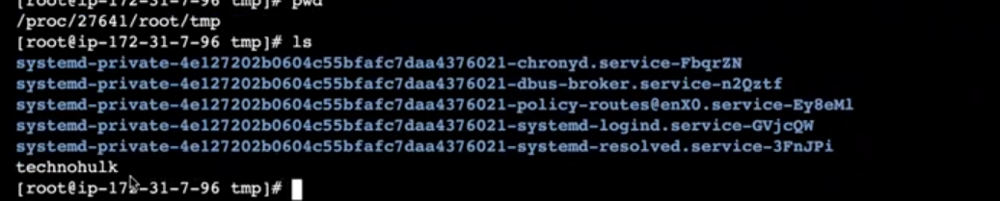
/tmp — technohulk is there (shim root = host root)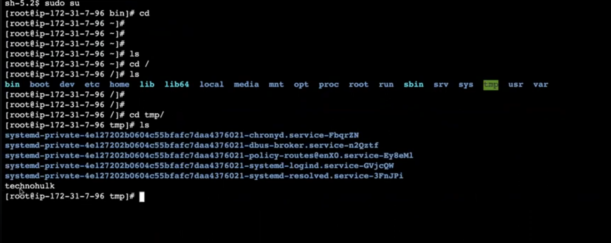